Tratamientos de secado
Cambios en el peso
Tabla descriptiva
## # A tibble: 14 × 5
## # Groups: Temperatura [2]
## Temperatura Hora n Mean sd
## <fct> <fct> <int> <dbl> <dbl>
## 1 60 0 3 20.4 0.246
## 2 60 1 3 14.0 1.31
## 3 60 2 3 12.5 1.34
## 4 60 3 3 10.5 1.56
## 5 60 4 3 8.48 1.74
## 6 60 5 3 6.69 1.75
## 7 60 6 3 4.97 1.59
## 8 60 7 3 2.52 0.482
## 9 80 0 3 19.7 0.401
## 10 80 1 3 12.7 0.572
## 11 80 2 3 9.37 0.804
## 12 80 3 3 5.61 0.810
## 13 80 4 3 2.88 0.336
## 14 80 5 3 2.08 0.124Gráfico de medias con desvío estándar

Gráfico de líneas de tendencia medias y valores puntuales

Correlación de cada unidad observacional en el tiempo
## 0 1 2 3 4 5
## 0 1.00 0.82 0.92 0.90 0.88 0.86
## 1 0.82 1.00 0.91 0.86 0.83 0.84
## 2 0.92 0.91 1.00 0.99 0.97 0.96
## 3 0.90 0.86 0.99 1.00 0.99 0.98
## 4 0.88 0.83 0.97 0.99 1.00 1.00
## 5 0.86 0.84 0.96 0.98 1.00 1.00Matriz de covarianzas
## 0 1 2 3 4 5
## 0 0.24 0.46 0.88 1.28 1.40 1.15
## 1 0.46 1.32 2.06 2.86 3.12 2.67
## 2 0.88 2.06 3.88 5.66 6.26 5.23
## 3 1.28 2.86 5.66 8.41 9.40 7.84
## 4 1.40 3.12 6.26 9.40 10.69 8.98
## 5 1.15 2.67 5.23 7.84 8.98 7.61Modelo marginal. Estructura autoregresiva de orden 1
## gls(model = Peso ~ Hora * Temperatura + basal, data = datospeso2w,
## correlation = corAR1(form = ~1 | Repeticion))Comprobación de supuestos


##
## Shapiro-Wilk normality test
##
## data: e
## W = 1, p-value = 0.2Coeficientes del modelo
## (Intercept) Hora2 Hora3 Hora4 Hora5 Temperatura80
## -31.997 -1.540 -3.514 -5.533 -7.323 0.299
## basal Hora2:Temperatura80 Hora3:Temperatura80 Hora4:Temperatura80 Hora5:Temperatura80
## 2.255 -1.825 -3.605 -4.321 -3.329Anova
## Denom. DF: 19
## numDF F-value p-value
## (Intercept) 1 3276 <.0001
## Hora 4 124 <.0001
## Temperatura 1 120 <.0001
## basal 1 13 0.0018
## Hora:Temperatura 4 5 0.0066Efectos simples
## $emmeans
## Hora = 1:
## Temperatura emmean SE df lower.CL upper.CL
## 60 13.22 0.558 17.3 12.05 14.40
## 80 13.52 0.558 17.3 12.35 14.70
##
## Hora = 2:
## Temperatura emmean SE df lower.CL upper.CL
## 60 11.68 0.558 17.3 10.51 12.86
## 80 10.16 0.558 17.3 8.98 11.33
##
## Hora = 3:
## Temperatura emmean SE df lower.CL upper.CL
## 60 9.71 0.558 17.3 8.53 10.88
## 80 6.40 0.558 17.3 5.23 7.58
##
## Hora = 4:
## Temperatura emmean SE df lower.CL upper.CL
## 60 7.69 0.558 17.3 6.52 8.87
## 80 3.67 0.558 17.3 2.49 4.84
##
## Hora = 5:
## Temperatura emmean SE df lower.CL upper.CL
## 60 5.90 0.558 17.3 4.73 7.08
## 80 2.87 0.558 17.3 1.69 4.04
##
## Degrees-of-freedom method: appx-satterthwaite
## Confidence level used: 0.95
##
## $contrasts
## Hora = 1:
## contrast estimate SE df t.ratio p.value
## Temperatura60 - Temperatura80 -0.30 0.877 9.7 -0.340 0.7410
##
## Hora = 2:
## contrast estimate SE df t.ratio p.value
## Temperatura60 - Temperatura80 1.53 0.877 9.7 1.740 0.1130
##
## Hora = 3:
## contrast estimate SE df t.ratio p.value
## Temperatura60 - Temperatura80 3.31 0.877 9.7 3.770 0.0040
##
## Hora = 4:
## contrast estimate SE df t.ratio p.value
## Temperatura60 - Temperatura80 4.02 0.877 9.7 4.590 0.0010
##
## Hora = 5:
## contrast estimate SE df t.ratio p.value
## Temperatura60 - Temperatura80 3.03 0.877 9.7 3.460 0.0060
##
## Degrees-of-freedom method: appx-satterthwaiteGráfico de comparaciones

Modelo

Actividad antioxidante
 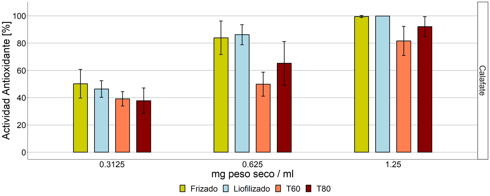
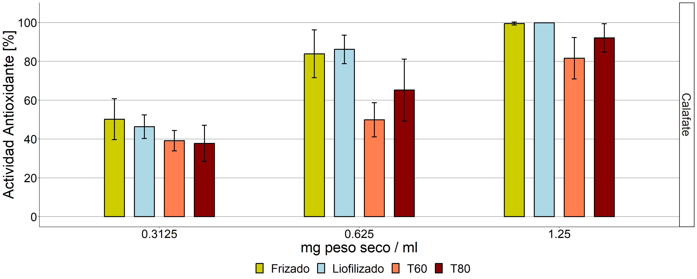
Ubajay
Modelo
## Formula: aao/100 ~ Tratamiento + (1 | Concentracion)
## Data: datosaao_uba
## AIC BIC logLik df.resid
## -63.2 -53.7 37.6 30
## Random-effects (co)variances:
##
## Conditional model:
## Groups Name Std.Dev.
## Concentracion (Intercept) 0.592
##
## Number of obs: 36 / Conditional model: Concentracion, 3
##
## Dispersion parameter for beta family (): 26.8
##
## Fixed Effects:
##
## Conditional model:
## (Intercept) TratamientoLiofilizado TratamientoT60 TratamientoT80
## -0.532 -0.611 -1.233 -0.674Verificación de supuestos

Anova
## Analysis of Deviance Table (Type II Wald chisquare tests)
##
## Response: aao/100
## Chisq Df Pr(>Chisq)
## Tratamiento 32.9 3 3.5e-07 ***
## ---
## Signif. codes: 0 '***' 0.001 '**' 0.01 '*' 0.05 '.' 0.1 ' ' 1Comparaciones a posteriori
## $emmeans
## Tratamiento response SE df asymp.LCL asymp.UCL
## Frizado 0.370 0.0856 Inf 0.2225 0.547
## Liofilizado 0.242 0.0683 Inf 0.1333 0.398
## T60 0.146 0.0480 Inf 0.0746 0.267
## T80 0.230 0.0662 Inf 0.1259 0.384
##
## Confidence level used: 0.95
## Intervals are back-transformed from the logit scale
##
## $contrasts
## contrast odds.ratio SE df null z.ratio p.value
## Frizado / Liofilizado 1.84 0.367 Inf 1 3.070 0.0120
## Frizado / T60 3.43 0.756 Inf 1 5.600 <.0001
## Frizado / T80 1.96 0.394 Inf 1 3.360 0.0040
## Liofilizado / T60 1.86 0.422 Inf 1 2.750 0.0310
## Liofilizado / T80 1.07 0.223 Inf 1 0.310 0.9900
## T60 / T80 0.57 0.130 Inf 1 -2.450 0.0680
##
## P value adjustment: tukey method for comparing a family of 4 estimates
## Tests are performed on the log odds ratio scale
Calafate
Modelo
## Formula: aao/100 ~ Tratamiento + (1 | Concentracion)
## Data: datosaao_cal
## AIC BIC logLik df.resid
## -73.7 -64.2 42.9 30
## Random-effects (co)variances:
##
## Conditional model:
## Groups Name Std.Dev.
## Concentracion (Intercept) 1.32
##
## Number of obs: 36 / Conditional model: Concentracion, 3
##
## Dispersion parameter for beta family (): 13.1
##
## Fixed Effects:
##
## Conditional model:
## (Intercept) TratamientoLiofilizado TratamientoT60 TratamientoT80
## 1.73332 -0.00248 -1.30122 -0.79498Verificación de supuestos 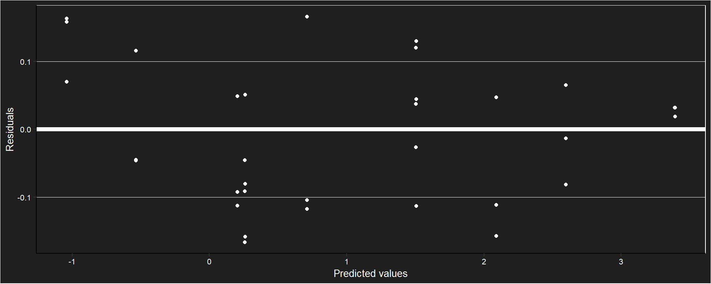
Anova
## Analysis of Deviance Table (Type II Wald chisquare tests)
##
## Response: aao/100
## Chisq Df Pr(>Chisq)
## Tratamiento 24.8 3 1.7e-05 ***
## ---
## Signif. codes: 0 '***' 0.001 '**' 0.01 '*' 0.05 '.' 0.1 ' ' 1Comparaciones a posteriori
## $emmeans
## Tratamiento response SE df asymp.LCL asymp.UCL
## Frizado 0.850 0.101 Inf 0.545 0.964
## Liofilizado 0.850 0.101 Inf 0.546 0.964
## T60 0.606 0.190 Inf 0.245 0.880
## T80 0.719 0.160 Inf 0.352 0.923
##
## Confidence level used: 0.95
## Intervals are back-transformed from the logit scale
##
## $contrasts
## contrast odds.ratio SE df null z.ratio p.value
## Frizado / Liofilizado 1.00 0.297 Inf 1 0.010 1.0000
## Frizado / T60 3.67 1.161 Inf 1 4.120 <.0001
## Frizado / T80 2.21 0.659 Inf 1 2.670 0.0380
## Liofilizado / T60 3.66 1.145 Inf 1 4.160 <.0001
## Liofilizado / T80 2.21 0.650 Inf 1 2.690 0.0360
## T60 / T80 0.60 0.188 Inf 1 -1.630 0.3630
##
## P value adjustment: tukey method for comparing a family of 4 estimates
## Tests are performed on the log odds ratio scale
Carotenoides

Modelo
##
## Call: glm(formula = b_car ~ Tratamiento, family = "Gamma", data = secado_carotenoides)
##
## Coefficients:
## (Intercept) TratamientoLiofilizado TratamientoT60 TratamientoT80
## 0.00437 0.00351 0.02042 0.01069
##
## Degrees of Freedom: 11 Total (i.e. Null); 8 Residual
## Null Deviance: 5.57
## Residual Deviance: 0.579 AIC: 116Comprobación de supuestos
 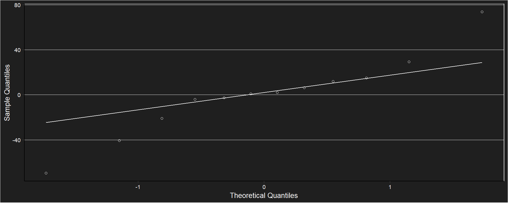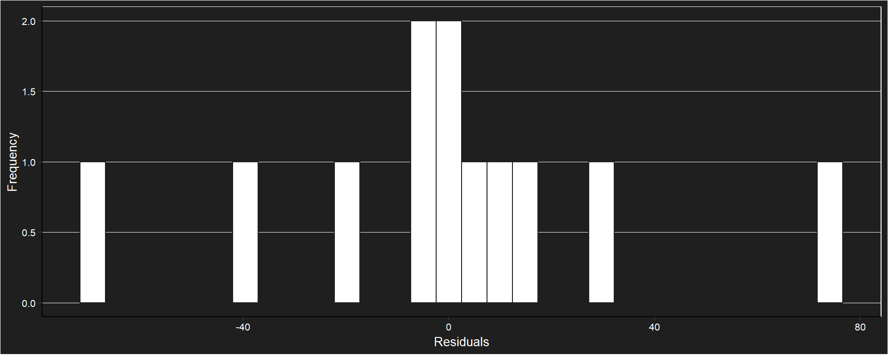
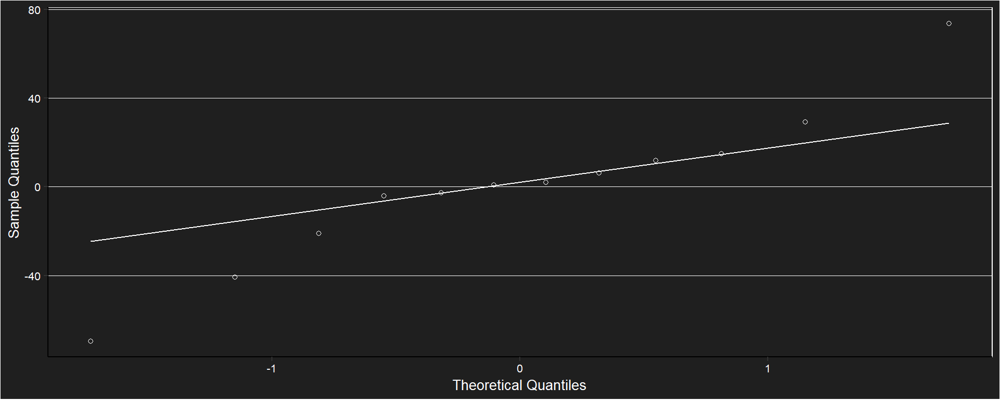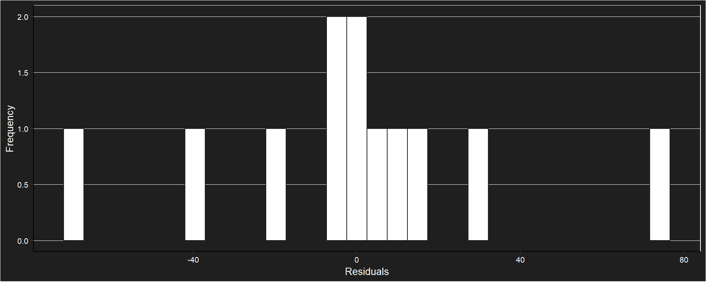
##
## Shapiro-Wilk normality test
##
## data: e
## W = 0.9, p-value = 0.5## Levene's Test for Homogeneity of Variance (center = median)
## Df F value Pr(>F)
## group 3 1.78 0.23
## 8Anova del modelo
## Analysis of Deviance Table (Type II tests)
##
## Response: b_car
## LR Chisq Df Pr(>Chisq)
## Tratamiento 75.3 3 3.1e-16 ***
## ---
## Signif. codes: 0 '***' 0.001 '**' 0.01 '*' 0.05 '.' 0.1 ' ' 1Comparaciones a posteriori
## $emmeans
## Tratamiento response SE df lower.CL upper.CL
## Frizado 228.6 34.0 8 170.3 348
## Liofilizado 126.8 18.8 8 94.4 193
## T60 40.3 6.0 8 30.0 61
## T80 66.4 9.9 8 49.4 101
##
## Confidence level used: 0.95
## Intervals are back-transformed from the inverse scale
##
## $contrasts
## contrast estimate SE df t.ratio p.value
## Frizado - Liofilizado -0.00351 0.00134 8 -2.620 0.1132
## Frizado - T60 -0.02042 0.00374 8 -5.460 0.0027
## Frizado - T80 -0.01069 0.00233 8 -4.590 0.0077
## Liofilizado - T60 -0.01690 0.00386 8 -4.370 0.0102
## Liofilizado - T80 -0.00718 0.00253 8 -2.840 0.0831
## T60 - T80 0.00973 0.00431 8 2.260 0.1878
##
## Note: contrasts are still on the inverse scale
## P value adjustment: tukey method for comparing a family of 4 estimates
Antocianinas

Modelo
##
## Call:
## lm(formula = Antocianinas ~ Tratamiento, data = datosanto)
##
## Coefficients:
## (Intercept) TratamientoLiofilizado TratamientoT60 TratamientoT80
## 1306.3 535.4 -125.7 -63.7Verificación de supuestos

##
## Shapiro-Wilk normality test
##
## data: e
## W = 0.9, p-value = 0.1Anova
## Analysis of Variance Table
##
## Response: Antocianinas
## Df Sum Sq Mean Sq F value Pr(>F)
## Tratamiento 3 829717 276572 1.78 0.23
## Residuals 8 1242103 155263Comparaciones a posteriori
## $emmeans
## Tratamiento emmean SE df lower.CL upper.CL
## Frizado 1306 228 8 782 1831
## Liofilizado 1842 228 8 1317 2366
## T60 1181 228 8 656 1705
## T80 1243 228 8 718 1767
##
## Confidence level used: 0.95
##
## $contrasts
## contrast estimate SE df t.ratio p.value
## Frizado - Liofilizado -535 322 8 -1.664 0.3990
## Frizado - T60 126 322 8 0.391 0.9780
## Frizado - T80 64 322 8 0.198 0.9970
## Liofilizado - T60 661 322 8 2.055 0.2460
## Liofilizado - T80 599 322 8 1.862 0.3150
## T60 - T80 -62 322 8 -0.192 0.9970
##
## P value adjustment: tukey method for comparing a family of 4 estimates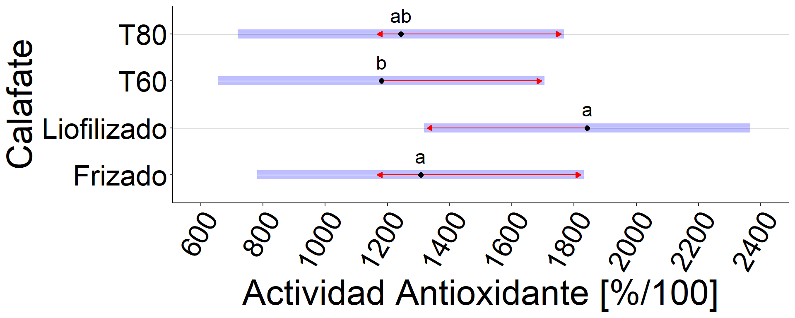
Correlaciones
Ubajay
Modelo
## Linear mixed model fit by REML ['lmerModLmerTest']
## Formula: aao ~ (b_car) + (1 | Tratamiento)
## Data: correlaciones_uba
## REML criterion at convergence: 94.8
## Random effects:
## Groups Name Std.Dev.
## Tratamiento (Intercept) 0.0
## Residual 13.9
## Number of obs: 12, groups: Tratamiento, 4
## Fixed Effects:
## (Intercept) b_car
## 26.739 0.124
## optimizer (nloptwrap) convergence code: 0 (OK) ; 0 optimizer warnings; 1 lme4 warningsVerificación de supuestos
 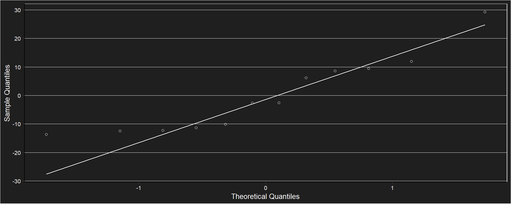
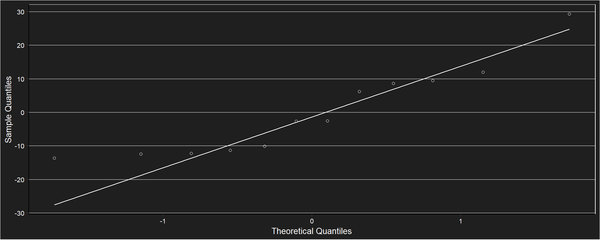
##
## Shapiro-Wilk normality test
##
## data: e
## W = 0.9, p-value = 0.1Anova
## Linear mixed model fit by REML. t-tests use Satterthwaite's method ['lmerModLmerTest']
## Formula: aao ~ (b_car) + (1 | Tratamiento)
## Data: correlaciones_uba
##
## REML criterion at convergence: 94.8
##
## Scaled residuals:
## Min 1Q Median 3Q Max
## -0.981 -0.833 -0.192 0.631 2.102
##
## Random effects:
## Groups Name Variance Std.Dev.
## Tratamiento (Intercept) 0 0.0
## Residual 194 13.9
## Number of obs: 12, groups: Tratamiento, 4
##
## Fixed effects:
## Estimate Std. Error df t value Pr(>|t|)
## (Intercept) 26.7385 7.0651 10.0000 3.78 0.0036 **
## b_car 0.1243 0.0503 10.0000 2.47 0.0330 *
## ---
## Signif. codes: 0 '***' 0.001 '**' 0.01 '*' 0.05 '.' 0.1 ' ' 1
##
## Correlation of Fixed Effects:
## (Intr)
## b_car -0.822
## optimizer (nloptwrap) convergence code: 0 (OK)
## boundary (singular) fit: see help('isSingular')## [1] 0.616Existe evidencia para aceptar que beta1 difiere de cero (R = 0.616, valor p = 0.033)
Gráfico del modelo ajustado
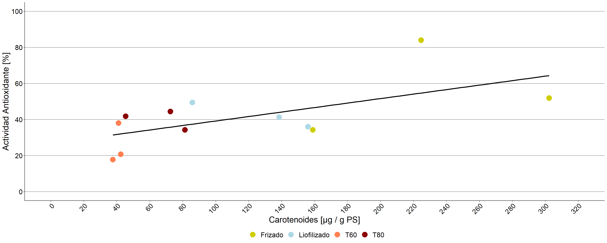
Calafate
Modelo
## Linear mixed model fit by REML ['lmerModLmerTest']
## Formula: aao ~ (Antocianinas) + (1 | Tratamiento)
## Data: correlaciones_cal
## REML criterion at convergence: 100
## Random effects:
## Groups Name Std.Dev.
## Tratamiento (Intercept) 14.4
## Residual 12.4
## Number of obs: 12, groups: Tratamiento, 4
## Fixed Effects:
## (Intercept) Antocianinas
## 62.37663 0.00641Verificación de supuestos
 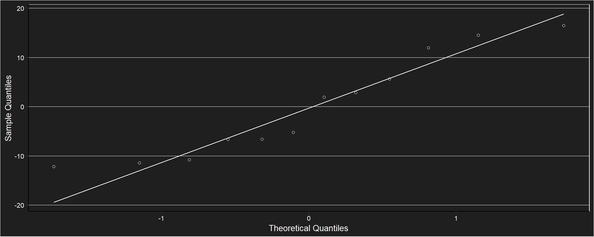
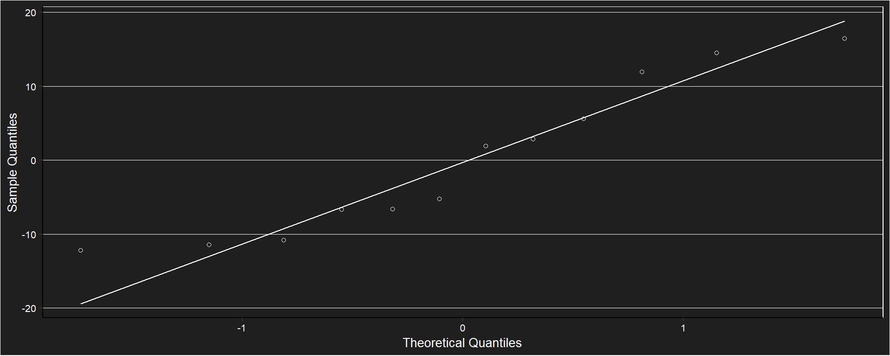
##
## Shapiro-Wilk normality test
##
## data: e
## W = 0.9, p-value = 0.2Anova
## Linear mixed model fit by REML. t-tests use Satterthwaite's method ['lmerModLmerTest']
## Formula: aao ~ (Antocianinas) + (1 | Tratamiento)
## Data: correlaciones_cal
##
## REML criterion at convergence: 100
##
## Scaled residuals:
## Min 1Q Median 3Q Max
## -0.987 -0.624 -0.138 0.578 1.328
##
## Random effects:
## Groups Name Variance Std.Dev.
## Tratamiento (Intercept) 207 14.4
## Residual 154 12.4
## Number of obs: 12, groups: Tratamiento, 4
##
## Fixed effects:
## Estimate Std. Error df t value Pr(>|t|)
## (Intercept) 62.37663 16.62944 9.93593 3.75 0.0038 **
## Antocianinas 0.00641 0.01046 8.64955 0.61 0.5557
## ---
## Signif. codes: 0 '***' 0.001 '**' 0.01 '*' 0.05 '.' 0.1 ' ' 1
##
## Correlation of Fixed Effects:
## (Intr)
## Antocianins -0.876## [1] 0.406No existe evidencia para aceptar que beta1 difiere de cero (R = 0.406, valor p = 0.029)
Gráfico del modelo ajustado
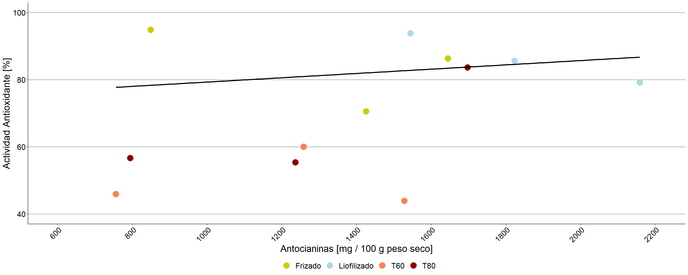